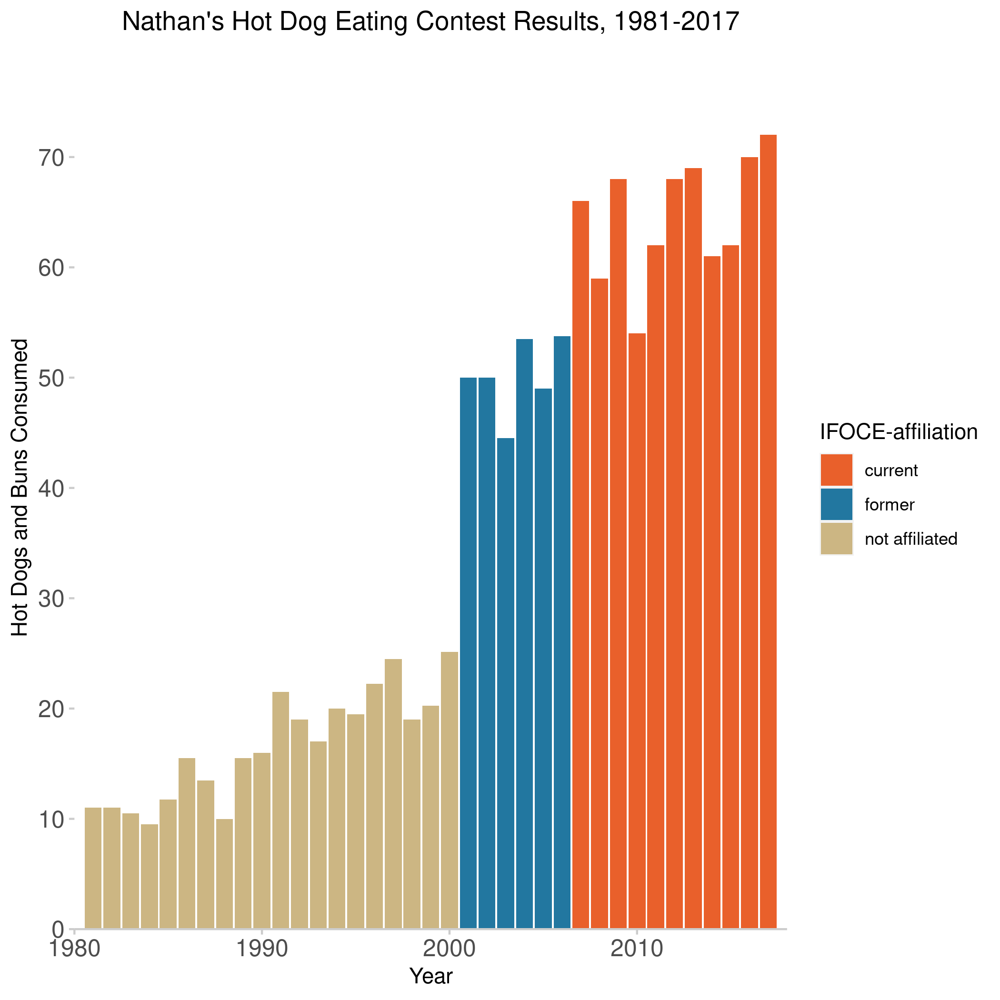

Our first lab! I think there’s something very satisfying about working with silly datasets. Also, the colorschemes chosen here are quite good, I think. Gave me more to think about!
library(tidyverse)
hdm_affil <- read_csv(here("data", "hot_dog_contest_with_affiliation.csv"),
col_types = cols(
affiliated = col_factor(levels = NULL),
gender = col_factor(levels = NULL)
)) %>%
mutate(post_ifoce = year >= 1997) %>%
filter(year >= 1981 & gender == "male")
hdm_affil %>%
ggplot(aes(x = year, y = num_eaten, fill = affiliated)) +
geom_col() +
labs(x = "Year", y = "Hot Dogs and Buns Consumed") +
ggtitle("Nathan's Hot Dog Eating Contest Results, 1981-2017") +
theme_minimal() +
scale_fill_manual(
values = c('#E9602B','#2277A0','#CCB683'),
name = 'IFOCE-affiliation'
) +
scale_y_continuous(expand = c(0,0), breaks = seq(0, 70, 10)) +
scale_x_continuous(expand = c(0,0)) +
coord_cartesian(xlim = c(1980, 2018), ylim = c(0, 80)) +
theme(plot.title = element_text(hjust = 0.5)) +
theme(axis.text = element_text(size = 12)) +
theme(panel.background = element_blank()) +
theme(axis.line.x = element_line(color = "gray80", size = 0.5)) +
theme(axis.ticks = element_line(color = "gray80", size = 0.5))
ggsave('hot_dog_plot.png')
